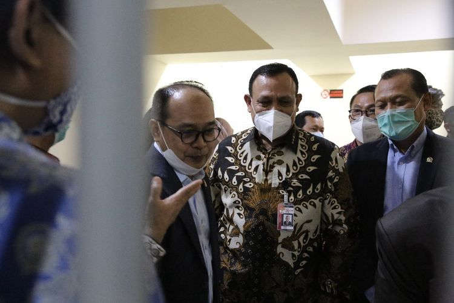

KPK Ungkap Modus Penyelewengan Anggaran Covid-19 Untuk Pilkada
JAKARTA, KOMPAS.com - Pemerintah telah mengalokasikan anggaran sebesar Rp 695,2 triliun untuk menangani Covid-19. Namun, alokasi anggaran sebesar itu disebut rawan untuk dikorupsi. Menurut Ketua Komisi Pemberantasan Korupsi ( KPK) Firli Bahuri, salah satu bentuk penyelewengan anggaran tersebut yaitu untuk kepentingan pemilihan kepala daerah ( pilkada). "Penyalahgunaan juga bisa dilihat dari besar kecilnya permintaan anggaran penanganan Covid-19, di wilayah atau daerah yang ikut menyelenggarakan pilkada serentak," kata Firli seperti dilansir dari Antara, Minggu (12/7/2020). Seperti diketahui, kepala daerah yang sedang menjabat dan masih periode pertama, masih memiliki kesempatan mencalonkan diri kembali. Menurut Firli, salah satu modus penyalahgunaan anggaran itu yakni dengan mendompleng program bantuan sosial. Caranya, dengan mamajang foto mereka pada bantuan sosial yang diserahkan kepada masyarakat
"Tidak sedikit informasi perihal cara oknum kepala daerah petahana yang hanya bermodalkan selembar sticker foto atau spanduk raksasa, mendompleng bantuan sosial yang berasal dari uang negara, bukan dari kantong pribadi mereka, yang diterima KPK," kata Firli. Penyalahgunaan, imbuh dia, juga terlihat dari besar kecilnya anggaran yang diajukan oleh kepala daerah. Menurut Firli, ada beberapa kepala daerah yang mengajukan alokasi anggaran tinggi, meski jumlah kasus Covid-19 di daerahnya rendah. Di sisi lain, ada kepala daerah yang mengajukan anggaran rendah, padahal kasus di wilayahnya tinggi. "Hal itu terjadi karena sang kepala daerah sudah memimpin di periode kedua, sehingga tidak berkepentingan lagi untuk maju," ungkapnya. Firli pun mengingatkan agar kepala daerah yang kembali ingin berkontestasi tidak macam-macam dengan anggaran penanganan Covid-19 yang ada. "Kembali saya ingatkan kepada calon koruptor atau siapapun yang berpikir atau coba-coba korupsi anggaran penanganan Covid-19, hukuman mati menanti dan hanya persoalan waktu bagi kami untuk mengungkap semua itu," kata Firli.